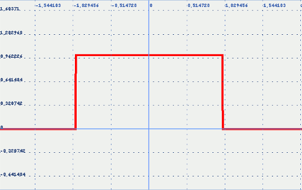

Descripción
Devuelve 1 para valores reales en el intervalo (a,b) y 0 en caso contrario
Cadena de entrada
intervalo
Cadena de salida
intervalo
Uso
intervalo(<min>,<punto>,<max>)
| Parámetros | |||
|---|---|---|---|
| # | Parámetro | Descripción | Valor por defecto |
| 1 | min | Extremo inferior del intervalo, excluido (real) | |
| 2 | punto | Punto de evaluación (real) | |
| 3 | max | Extremo superior del intervalo, excluido (real) | |
Ejemplos
intervalo(0,5,10)
RealDoble: 1
intervalo(0,0,10)
RealDoble: 0
intervalo(0,10,10)
RealDoble: 0
intervalo cerrado:
intervalo(prev(0),0,next(10)) [0,10]
RealDoble: 1
intervalo(prev(0),10,next(10)) [0,10]
RealDoble: 1
intervalos semiabiertos:
intervalo(prev(0),0,10) [0,10)
RealDoble: 1
intervalo(0,10,next(10)) (0,10]
RealDoble: 1
intervalo(-inf,10,10) (-∞,10)
RealDoble: 0
intervalo(prev(0),0,inf) [0,∞)
RealDoble: 1
intervalo(-1,x,1)
Salida JGE: 
Véase también…